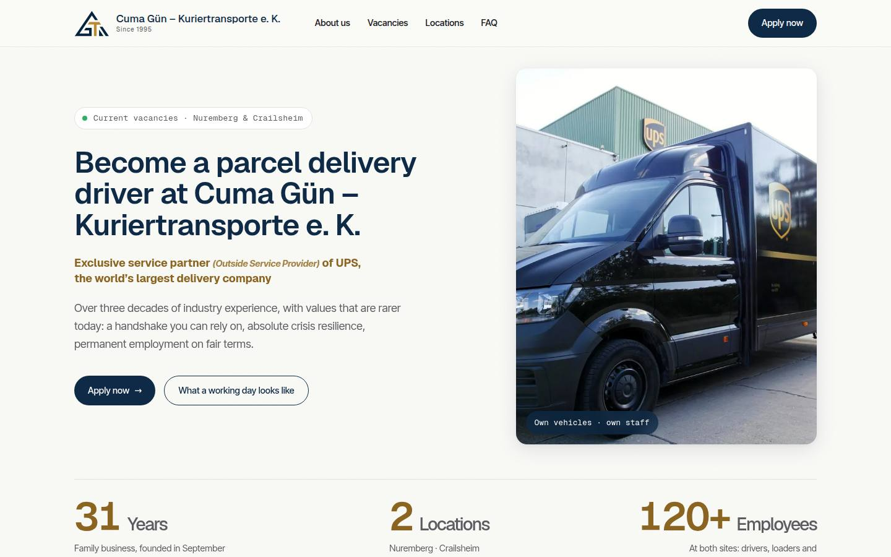
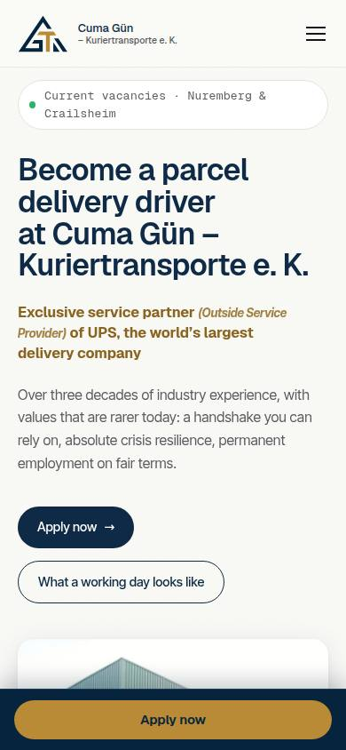

delivered Client project
Cuma Gün – Kuriertransporte e. K.
Open positions at two sites → every application lands in the right inbox by itself.
180+ automated checks before hand-over
Translated for this page — the client’s website is in German.
How it was done
Careers website for a courier company from Nuremberg and Crailsheim
- TaskOpen positions at two locations, Nuremberg and Crailsheim.
- BuiltA careers page and an application form with file upload.
- ResultEvery application goes by itself to the inbox of the right location.
- 2cities, Nuremberg and Crailsheim
- 1 formapplications with files go straight to the right city's inbox
- 180+automated checks before hand-over
Handed over to the client on 07.10.2026 · launch on guen-transporte.de
What can come next
- I build online booking for interviews
- I build a bot that answers applicants’ standard questions
- I build an automatic overview of all applications

